유사 서비스와 동일 타겟 서비스가 실제로 하고 있는 마케팅을 한 곳에 모으고,
거기서 차용할 것을 정해 온라인 채널별 집행 방식을 확정한다.
자체 SNS 채널은 런칭 전에 세팅해두고 같이 굴리되, 초기 금액 비중은 낮게 가져간다.
모든 채널에 이 한 문장만.
챔피언십·번호생성은 설치 이후에 노출.
이미 4050이 모여 있는 곳
런칭 전 계정 세팅 완료 후 병행
성과가 확인되면 비중을 옮긴다
설치 수는 보지 않는다.
스캔하지 않은 설치는 0원짜리다.
나이가 많을수록 짠테크 호감도가 높아진다. 그리고 그들은 이미 대형 플랫폼 안에 모여 있다.
낙첨 로또를 QR로 등록하면 다음 회차에 한 번 더 기회를 준다. FULIF와 가장 가까운 서비스.
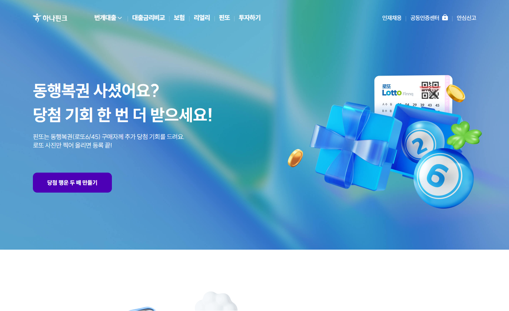
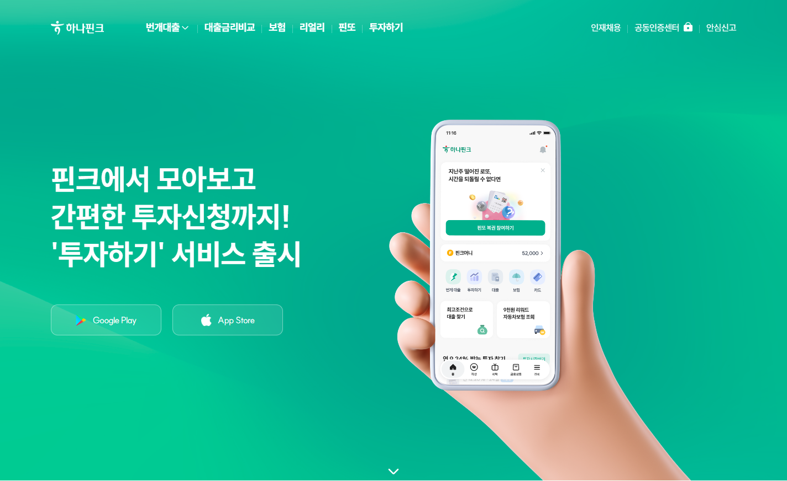
핀또의 최대 자산은 광고가 아니라 '1금융권 신뢰 + 기존 고객 동선'이다. 2016년 하나금융+SKT 합작 설립, 2022년 SKT 지분 정리로 하나금융 100% 자회사. 하나은행 연계 상품을 쓰던 고객이 앱을 열면 바로 핀또가 보인다.
하나은행·핀크 고객 기반 활용. 신규 앱을 따로 알리지 않고 기존 금융 앱 안에 서비스를 심었다
언론 PR. 금융·핀테크 매체에 보도자료 — 서비스 설명 자체가 기사가 되게 만들었다
자체 SNS 채널 운영. 네이버 블로그 · 인스타그램 · 티스토리 · 카카오 채널로 콘텐츠 발행
공유(친구추천) 이벤트. 친구가 첫 로또를 등록하면 양쪽에 핀크머니, 추천 횟수 무제한
→ 대형 퍼포먼스 광고 집행은 확인되지 않는다. PR + 자체 채널 + 공유 이벤트 조합
① 초대 보상 조건을 "가입"이 아니라 "친구의 첫 스캔 완료"로 건다
② 카피 구조 그대로: 질문형("사셨어요?") → 즉시 혜택("한 번 더") → 마찰 제거("사진만 찍으면 끝")
③ 자체 채널 세트도 동일하게: 블로그 · 인스타 · 카카오를 런칭 전 세팅
④ 1금융권 신뢰가 없는 우리는 그 자리를 실제 지급 증빙(교환 화면·당첨자)으로 채운다
기능이 아니라 숫자를 판다. 가입자·누적 상금·당첨자 수를 계속 언론에 내보낸다.
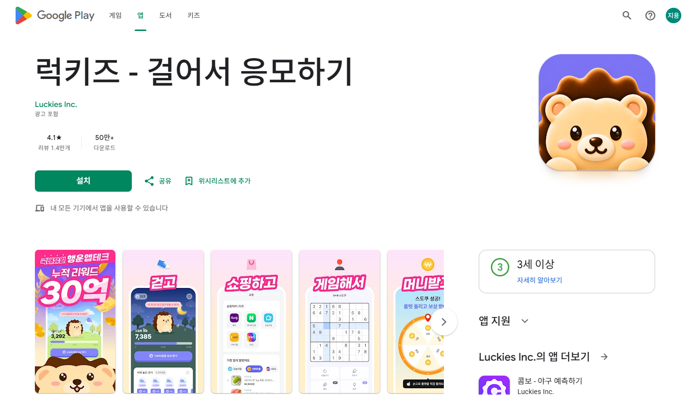
모회사 앱 안에서 먼저 검증했다. 삼쩜삼 이용자 170만 명 확인 후 별도 법인으로 분사
실적을 반복 PR한다. 가입자 수·누적 상금·실제 당첨자를 주기적으로 언론에 배포
자사 앱 광고 지면을 외부에 판다. 진입 팝업·상단 배너·이용 과정 배너 — 우리에게는 매체 후보
① 실제 지급 실적을 PR 자산으로. 누적 스캔 장수 · 지급 포인트 · 교환 건수 · 당첨자
② 확정 포인트 위에 확률형 기대감을 얹는다 (랜덤 보너스 · 챔피언십 점수)
③ 스토어 스크린샷을 동사(動詞) 시퀀스로. 럭키즈: 걷고→쇼핑하고→게임해서→머니받기 / 우리: 스캔하고 → 포인트 받고 → 쿠폰 바꾸고
동행복권 실제 당첨번호를 그대로 가져다 매주 토요일 밤 10시에 자체 추첨을 돌린다. 우리 챔피언십과 채점 방식이 같다.
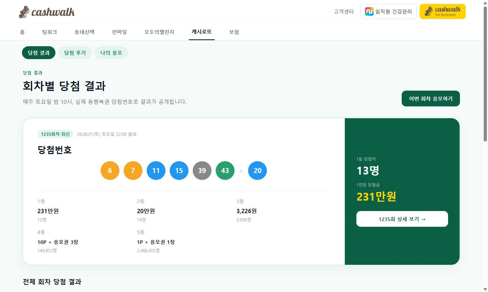
출석 보물상자를 3단계 → 10단계(최대 7,000보)로 세분화, 하루 보상 3회 → 10회
두 번째 보물상자부터 캐시로또 응모권 지급. 걸음수와 무관하게 첫 상자는 무조건 열림
광고를 보면 응모권이 추가 발급된다 (1일 최대 19회·92장) — 리워드 비용을 광고로 회수. 응모는 월~일, 결과는 토 22:00 발표
| 1등 | 231만원 | 13명 |
| 2등 | 20만원 | 74명 |
| 3등 | 3,226원 | 3,099명 |
| 4등 | 10P + 응모권 3장 | 149,853명 |
| 5등 | 1P + 응모권 1장 | 2,468,455명 |
246만 명이 5등으로 응모권을 돌려받는다 — 사실상 전원이 다음 회차 루프에 다시 들어간다.
DAU 470만 리워드 앱이 로또형 기대감을 자기 앱 안으로 흡수했다. 우리의 "기대감" 포지션은 독점이 아니다.
우리의 "근접 점수는 반드시 남는다"가 옳다는 증거. 다만 그 사실을 광고에 명시해야 한다 — 캐시로또는 안 하고 있다
회차별 결과·당첨 후기를 웹에 공개해 검색 자산으로 쓴다. 우리도 챔피언십 회차별 기록실을 웹에 노출
보상 비용을 광고 수익으로 회수하는 구조. 우리 스캔 완료 화면의 "광고 보기 +25P"를 같은 논리로 확장
| 항목 | 핀또 · 럭키즈 · 캐시로또 | FULIF |
|---|---|---|
| 보상 방식 | 낙첨 → 재추첨 (확률) | 낙첨 → 포인트 확정 지급 |
| 대부분의 유저는 | 등록해도 또 아무것도 못 받음 | 무조건 받음 + 근접 점수는 반드시 남음 |
| 기간 | 매주 리셋 | 1년 시즌 누적 — 기록이 쌓임 |
| 시상 | 1등만 | 근접 점수 · 구간별 리그 — 1등 아니어도 상 |
| 상금 형태 | 현금 (사행성 노출) | 트로피·물품·포인트 현금 미지급 → 광고 심사·신뢰에 유리 |
핀또는 운을 한 번 더 주고,
FULIF는 결과를 확정해서 준다.
그리고 그게 1년 동안 쌓인다.
"국내 최초"는 쓸 수 없다. 표시광고법 문제이자 핀또 이용자에게 즉시 반박당한다.
→ 대신 "확정 지급"과 "1년 누적"으로 싸운다
1등 번호와 완전 일치라야 당첨 → 등록해도 대부분 또 실망한다.
두 번째 실망이 쌓이는 구조.
은행 앱 안에 리워드를 심어 출시 2달 만에 가입자 100만을 모았다. 그리고 가입자의 60%가 4050이었다.
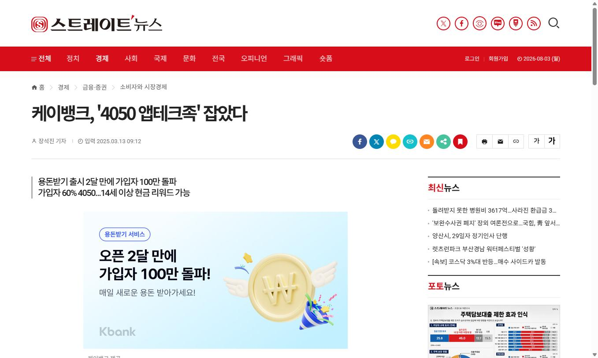
| 케이뱅크 | 용돈받기 — 2달 만에 100만, 가입자 60%가 4050 |
| 삼쩜삼 | 앱 내 행운복권 170만 검증 → 럭키즈 분사 |
| 핀크 | 핀크 앱에 핀또 탑재 → 로또 구매자 600만 겨냥 |
| 토스 | 만보기로 부족했던 30~50대 유입 |
| 우리은행 | 데일리워킹적금 — 40대 30.4%, 50대+ 30% |
그들은 전부 이미 유저가 모인 앱 안에서 시작했다.
FULIF는 그 안이 아니라 밖에서 출발한다.
그 유저가 모여 있는 플랫폼에 광고를 태운다.
캐시워크·토스·밴드가 곧 우리의 진입로다.
부수 효과: 금융권이 이 시장에 대거 들어왔다는 건 4050 리워드 수요가 검증됐다는 뜻이다. 투자·제휴 설명 자료에 그대로 쓸 수 있다.
부족했던 30~50대를 데려오기 위해 만든 기능. 외부 광고가 아니라 제품 안의 바이럴로 키웠다.
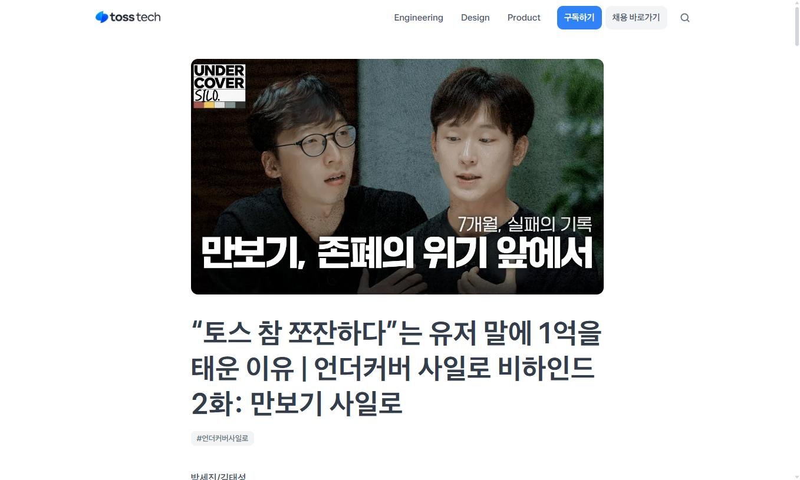
외부 매체를 쓰지 않았다. 토스 앱 홈·혜택 탭·푸시·연락처 기반 초대가 채널이었다
보상 인색함에 즉각 반응. "쪼잔하다"는 유저 말에 보상을 크게 올려 반전을 만들었다
기능이 다른 기능의 입구가 되게 동선을 설계했다
① 초대 공유 경로는 불특정 SNS가 아니라 연락처·메신저. 실제로 로또를 사는 가족·지인에게 보내게 한다
② 보상이 인색하면 4050은 바로 이탈한다. 첫 스캔 보상은 아깝게 잡지 않는다
③ 스캔 완료 화면 → 챔피언십 · 포인트샵으로 넘기는 동선을 명시적으로 만든다
"4050은 홈쇼핑에 익숙하다"는 전제로 라이브 방송을 늘리고, 그 하이라이트를 숏폼으로 자른다.
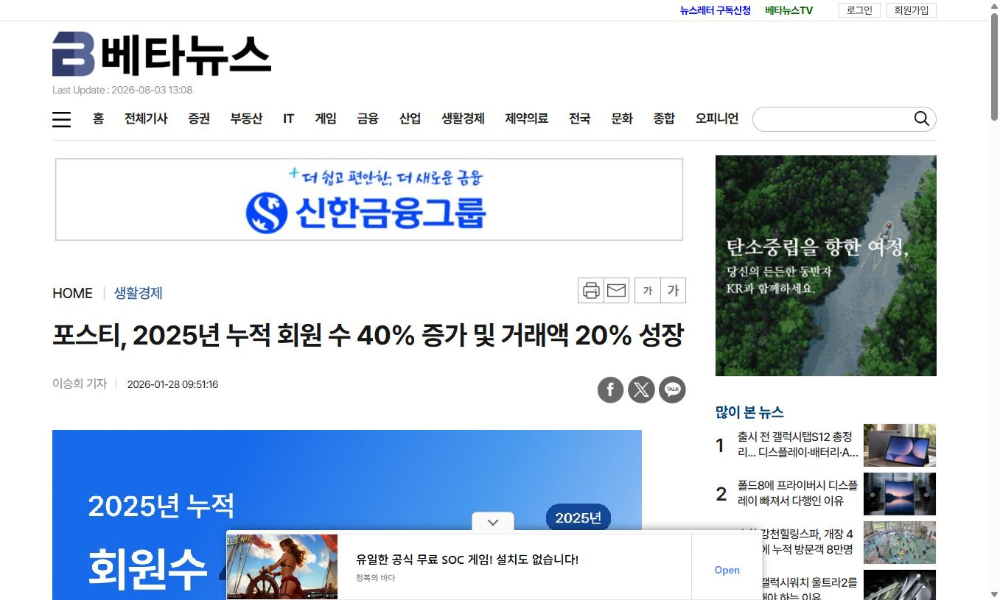
라이브 방송을 늘렸다. "4050세대는 홈쇼핑에 익숙한 만큼 라방을 강화" — 월 10회 → 16회
라방 하이라이트를 숏폼으로 편집. 방송을 놓친 사람도 진행자의 설명을 그대로 듣게 한다
상품 상세에 '영상으로 보는 상품 정보' 영역 신설. 사진으로는 알기 어려운 원단 재질·핏·마감을 영상으로 확인시킨다
✕ 2030용 15초 빠른 컷 편집만 만들어 돌린다
✓ 길게 설명하는 원본 영상을 먼저 만들고, 거기서 숏폼을 잘라낸다
① 크리에이터 협찬 영상이 곧 그 원본. 구매→확인→스캔→적립→교환을 길게 찍고 15초·숏폼을 잘라낸다
② 스토어·랜딩에 '영상으로 보는 사용법' 영역 배치
③ 이 세대의 진짜 질문은 "스캔이 진짜 되나 · 포인트가 진짜 들어오나" — 긴 실연 영상이 그 의심을 푼다
로또 구매층과 가장 겹치는 중년 남성을 정면으로 공략해 연간 거래액 60배를 만들었다.
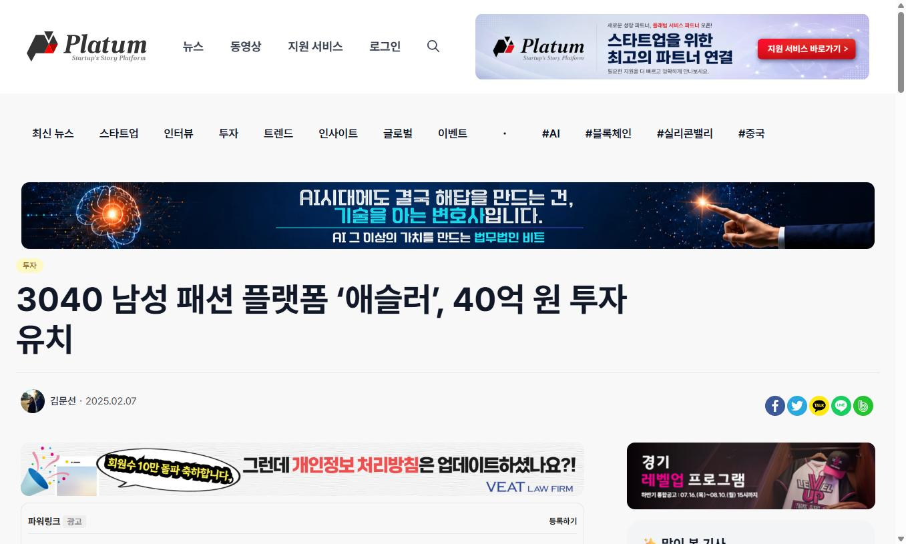
추상적 메시지를 쓰지 않는다. "중년 남성도 패션에 관심 많다" 같은 말 대신 구체적 행동을 공략
공략한 행동: 고르는 데 시간 쓰기 싫다 · 실패하기 싫다 · 나에게 맞는 것만 보고 싶다 · 마음에 들면 반복 구매한다
슬로건도 정체성 중심: "제2의 삶을 살아가는 4050 액티브 시니어 남성 버티컬 커머스"
✕ "게임처럼 재미있는 로또 앱"
✓ "결과 확인하고 낙첨까지 한 번에 정리하세요"
✓ "매주 버리던 복권, 이제 스캔하고 혜택 받으세요"
4050 남성에게는 재미보다 손해 방지 · 편리함 · 누적이 먼저다. 챔피언십도 "재미"가 아니라 기록·명예·꾸준함의 언어로 설명한다.
2021년 밴드·카카오스토리 사례는 더 이상 유효하지 않다. 현재는 유튜브 자체 채널을 운영한다.
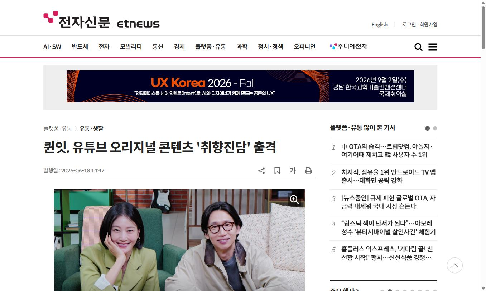
유튜브 오리지널 콘텐츠. 채널 '매거진Q TV'에서 4050 라이프스타일 토크 '취향진담' 발행
연령을 말하지 않는다. "시니어를 위한"이 아니라 취향·기준의 언어로 접근
연령·성별로 광고를 쪼개고 소재를 다르게 만든다 (글씨 크게, 전개 느리게)
2021년 밴드·카카오스토리 초기 사례. 카카오스토리는 지금 유효한 채널이 아니고, 퀸잇도 이후 일반 퍼포먼스 채널로 확장했다.
① 40대·50대 광고그룹 분리는 그대로 차용
② 소재는 글씨 크게, 전개 느리게
③ 자체 채널은 세팅해두고 협찬 영상 재활용으로 저비용 운영, 오리지널 제작은 3개월 후 검토
광고가 아니라 실제 참여자에게 생긴 결과가 입소문을 만들었다.
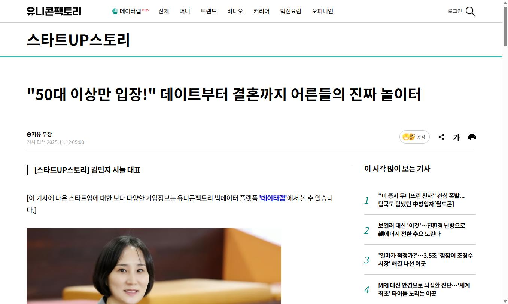
설치 광고에 의존하지 않았다. 실제 모임에서 관계가 만들어진 사례가 알려지며 회원이 늘었다
대표 인터뷰·언론 PR로 서비스의 존재 이유를 계속 설명한다
AI로 접근성을 낮췄다. 스마트폰에 익숙하지 않은 이용자를 배려한 UX를 마케팅 포인트로 쓴다
① "실제로 받은 사람"이 최고의 광고 소재. 경품 당첨자 · 쿠폰 교환자 · 챔피언십 우승자를 계속 콘텐츠로 만든다
② 온라인에서도 결과를 보여주는 콘텐츠가 배너보다 강하다
③ 스마트폰에 덜 익숙한 이용자를 위한 쉬운 사용법 콘텐츠 자체가 마케팅 자산
단, 시놀의 오프라인 모임 방식은 이번 계획에서 차용하지 않는다. 이번 라운드는 온라인 집행 한정.
| 레퍼런스 | 그들이 하는 것 | FULIF는 이렇게 한다 |
|---|---|---|
| 핀또 친구초대 |
친구가 첫 로또를 등록해야 양쪽 보상. 추천 횟수 무제한 | 초대 보상 조건 = "친구의 첫 스캔 완료". 공유 경로는 카카오톡 → 문자 → 연락처 |
| 럭키즈 실적 PR |
가입자·누적 상금·당첨자 수를 반복 노출. 확률형 고액 보상 | 2주차부터 누적 스캔 장수·지급 포인트·교환 건수·당첨자를 콘텐츠화. 확정 포인트 위에 랜덤 보너스 |
| 캐시워크 단일 메시지·매체 |
"걸으면 돈이 되는 앱" — 한 문장이 곧 서비스 설명. 자체 광고 상품 운영 | 광고에 기능을 나열하지 않는다. 한 문장으로 통일. 동시에 캐시워크를 매체로 산다 |
| 케이뱅크 시장 검증 |
은행 앱 안에 리워드 → 2달 만에 100만, 60%가 4050 | 우리는 앱 밖에서 출발한다 → 그 유저가 모인 플랫폼에 광고를 태운다. 리워드 매체 1순위의 근거 |
| 토스 바이럴·보상 |
연락처 기반 초대로 성장. 보상 인색 피드백에 즉각 크게 반응 | 초대는 메신저·연락처 우선. 첫 스캔 보상을 아깝게 잡지 않는다. 스캔 완료 화면 → 챔피언십 동선 |
| 포스티 영상 구조 |
"4050은 홈쇼핑에 익숙" → 라방 월 10→16회, 하이라이트를 숏폼으로, 상세에 '영상으로 보는 상품 정보' | 긴 실연 영상을 원본으로 먼저 만들고 15초·쇼츠·릴스로 분할. 스토어·랜딩에 '영상으로 보는 사용법' |
| 애슬러 메시지 톤 |
추상론 대신 고르기 귀찮다·실패하기 싫다는 구체적 행동을 공략 | "재미있는 로또 앱"이 아니라 "결과 확인하고 낙첨까지 한 번에 정리". 챔피언십은 기록·명예의 언어로 |
| 퀸잇 타겟 분리 |
유튜브 자체 채널 '매거진Q TV' 운영. 연령·성별로 광고와 소재를 분리 | 40대·50대 광고그룹 분리. 소재는 글씨 크게·전개 느리게. 자체 채널은 3개월 후 검토 |
| 시놀 증거 콘텐츠 |
광고보다 실제 참여자의 결과가 입소문을 만들었다 | 실제로 받은 사람을 계속 보여준다. 당첨자·교환자·챔피언 인터뷰를 광고 소재로 전환 |
| 매체 | 확인된 정책 | 판정 |
|---|---|---|
| 네이버 검색광고 | 복권·카지노·경마 등 사행산업은 정부기관 위탁 또는 허가를 받은 사이트만 광고 가능 | 위험 높음 |
| Google Ads / 유튜브 | 온라인 도박·복권은 국가별 인증 요건 충족 시에만 허용. 금지 예시에 "온라인 복권 구매" 명시 | 분류 싸움 |
| Meta (인스타·페북) | 온라인 도박·게임 광고에 사전 승인 절차 운영 | 사전 신청 |
| 카카오톡 채널 | 복권 등 사행산업 관련 정보 제공 채널 제한 | 채널 부적합 |
| 캐시워크 돈버는퀴즈 | 제한 업종은 성인상품·다단계·대부업·"불법" 도박 관련 서비스 | 문의 여지 |
| 버즈빌 오퍼월·CPE | 포인트·금융·생활 앱 500여 개 네트워크. 명시적 복권 제한 미확인 | 가장 유망 |
FULIF는 복권을 발행·판매·중개하지 않습니다. 이미 구매가 끝난 실물 복권의 결과를 확인하고, 사용이 끝난 낙첨 용지를 등록하면 포인트를 지급하는 리워드 앱입니다. 당첨을 보장하지 않으며, 현금을 지급하지 않고, 복권 구매를 유도하지 않습니다.
✕ "로또 당첨 확인 앱" → 복권 서비스로 분류될 여지
✓ "낙첨 용지 스캔하고 포인트 받는 앱"
"복권"보다 "포인트"를 앞세운다. 심사 통과율과 직결된다.
금지어 당첨 보장 · 상금 · 적중률 · 돈 버는 앱 · 월 ○○만원 · 100% · 무조건
포인트·금융·생활 앱 500여 개에 동시 송출. 우리 타겟이 이미 포인트 받으려고 모여 있는 곳이다.
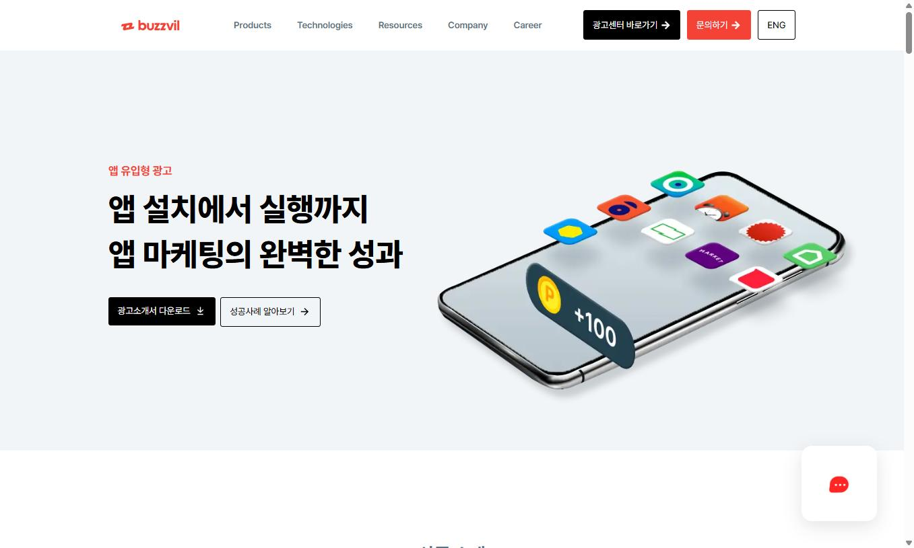
노출형 CPM/CPC · 퀴즈형 CPQ · 앱 유입형 CPI/CPE · 액션형 CPA
지면: 인앱 네이티브 · 홈화면 · 잠금화면 · 오퍼월 · 애드네트워크
단순 CPI로 걸면 보상만 받고 삭제한다. 반드시 CPE / 멀티미션으로 건다.
↑ 여기까지 완료해야 매체에 보상 지급. 이 설계 하나가 유저 품질을 결정한다.
"낙첨복권 스캔하고
첫 포인트 받기"
리워드 유저는 잔존율이 낮다. D7 재방문·2회차 스캔율을 반드시 함께 측정
이용자의 66%가 4050. 우리가 사야 할 유저가 가장 밀집한 곳이다.
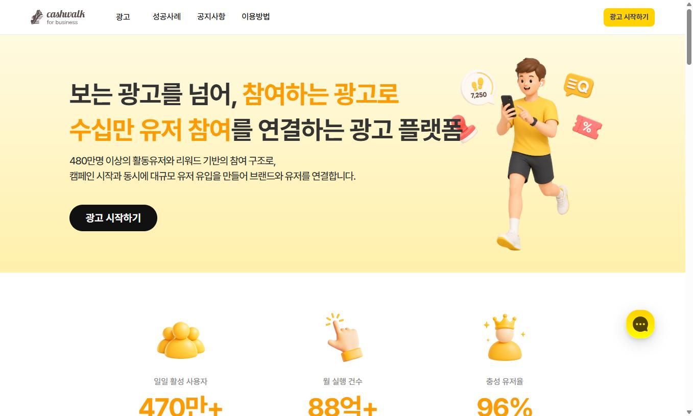
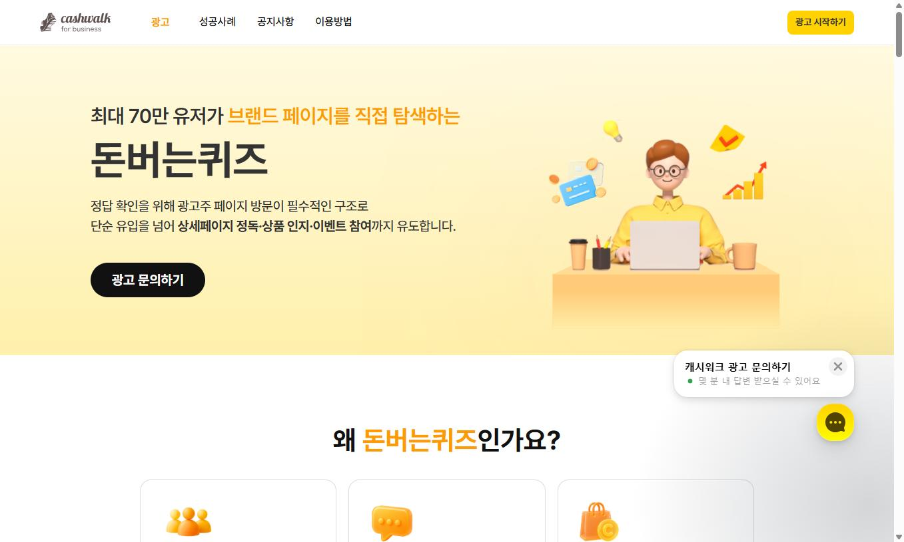
정답 확인을 위해 광고주 페이지 방문이 필수인 구조.
잠금화면 퀴즈상자 → 앱 접속 → 퀴즈 리스트 → 광고주 페이지 랜딩 → 정답 입력 → 재랜딩
퀴즈 자체를 소재로 쓴다
"낙첨복권으로 받을 수 있는 것은?"
집행 전 확인 필요. 제한 업종은 성인상품·다단계·대부업·"불법" 도박 관련 서비스다. FULIF는 합법이며 복권을 판매하지 않으므로 문의 여지가 있다. 심사 대응 문단을 첨부해 사전 문의한다.
4050에 도달하는 가장 밀도 높은 지면. 밴드보다 우선 테스트할 근거가 명확하다.
※ 복권 관련 소재의 집행 가능 여부는 사전 문의 필요
광고 예산의 상당분을 토요일 밤~일요일에 배치한다. 우리 제품의 존재 이유(낙첨)가 실시간으로 발생하는 유일한 시간이다.
Google Ads 유료 캠페인이 아니라 크리에이터 직접 협찬. 심사를 피하면서 신뢰도는 오히려 높다.
선정 기준: 구독자 수가 아니라 조회수 대비 참여율과 댓글 연령대. 블링·NoxInfluencer로 사전 검증
"매주 버리던 낙첨복권으로 실제 포인트를 받아봤습니다"
구매→확인→스캔→적립→교환 전 과정
"낙첨복권 버리기 전에 해야 할 일"
광고처럼 시작하지 않는다
"매주 로또 사는 부모님 폰에 깔아드린 앱"
30대 자녀 → 4050 설치 경로
긴 실연 영상 원본 1개를 만든 뒤 여기서 잘라 쓴다
제작비를 한 번만 쓰고 전 채널에 배분한다
검색광고는 막힐 가능성이 높지만 블로그·웹문서·카페 콘텐츠는 제한 대상이 아니다. 4050은 일단 네이버에 검색한다.
구분이 중요하다. 카카오톡 채널 운영은 복권 정보 제공 제한으로 부적합하지만, 유저가 직접 보내는 링크 공유는 무관하다.
공유 경로 카카오톡 › 문자 › 연락처 › 링크복사
불특정 SNS가 아니라 실제로 로또를 사는 가족·지인에게 보내게 만든다 — 핀또·토스가 검증한 구조
심사 낮음 · 즉시
버즈빌 · 캐시워크 · 럭키즈
CPE 멀티미션으로 첫 스캔까지
심사 확인 · 도달 최강
50대의 59.1%가 가입
토·일 골든타임 집중
광고계정 심사 없음
직접 협찬
긴 원본 영상 확보
광고 아님 = 제한 없음
블로그·웹문서
장기 자산
앱 내부 · 비용 없음
핀또 구조
첫 스캔이 조건
런칭 전 인스타·유튜브·네이버 블로그 계정을 세팅해두고 광고와 동시에 굴린다. 소재는 협찬 영상 재활용이라 추가 제작비 거의 없음 → 성과가 나오면 비중을 옮긴다
네이버 모바일·밴드 지면, 광고그룹을 40대/50대/30대로 분리.
인스타는 40대 한정(이용률 47.5%), 페북은 배치만 확장
카카오톡 채널 운영 · 카카오스토리 · X · 틱톡 대규모 · TV·연예인 모델 · 설치만 보상하는 저가 CPI
GFA 반려 → 리워드 CPE+네이버 콘텐츠
Meta 반려 → 유튜브 크리에이터
Google 반려 → 크리에이터·토스애즈
목표는 볼륨이 아니다.
가장 싸게 첫 스캔을 만드는 조합 찾기.
CPFS · Cost Per First Scan
| 구분 | 지표 |
|---|---|
| 유입 | 노출 · CTR · CPI · 채널별 가입률 |
| 핵심 | 설치→첫 스캔 완료율 · 첫 스캔당 비용 · 첫 스캔까지 걸린 시간 |
| 잔존 | 2회차(다음 주) 스캔율 — 리워드 유저 품질 판별 |
| 확산 | 초대 발송률 · 초대→가입률 · 초대→첫 스캔률 |
| 신뢰 | 포인트 교환 경험률 · 경품 참여율 · 리뷰 작성률 |
채널별로 반드시 분리 측정한다. 리워드 매체는 CPI가 싸지만 2회차 스캔율이 낮을 수 있다.
"복권 관련 앱 집행 가능한가" — 심사 대응 문단 첨부 · 오늘
이번 주 · 답이 와야 채널 배분이 확정된다
런칭 전 필수. 없으면 CPFS를 측정할 수 없다
구매→확인→스캔→적립→교환. 여기서 전 채널 소재를 잘라낸다
모든 광고의 착지점. 여기서 새면 광고비가 다 샌다
1·2번 답을 받기 전에 소재를 대량 제작하지 않는다.